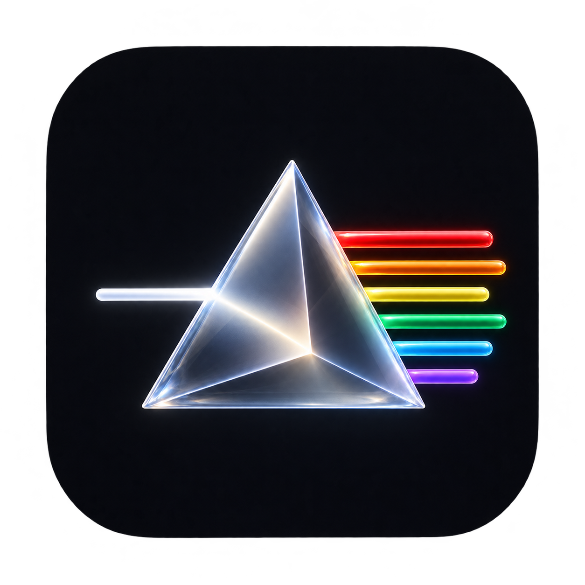

Prisma
LIGHT / IN MOTION
Оптический прототип
До переноса в JUCE
До переноса в JUCE
Перетаскивай линзу над спектром и волной, двигай мышь вокруг неё. В режиме «Только blur» видно, что даёт одно размытие без преломления. Нижний бегунок тоже стеклянный.
Инициализация…